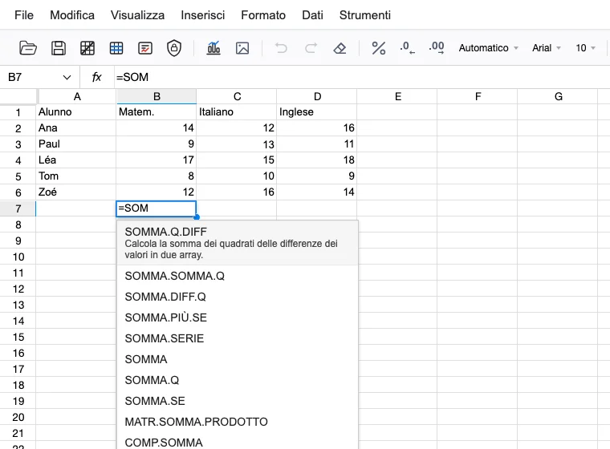
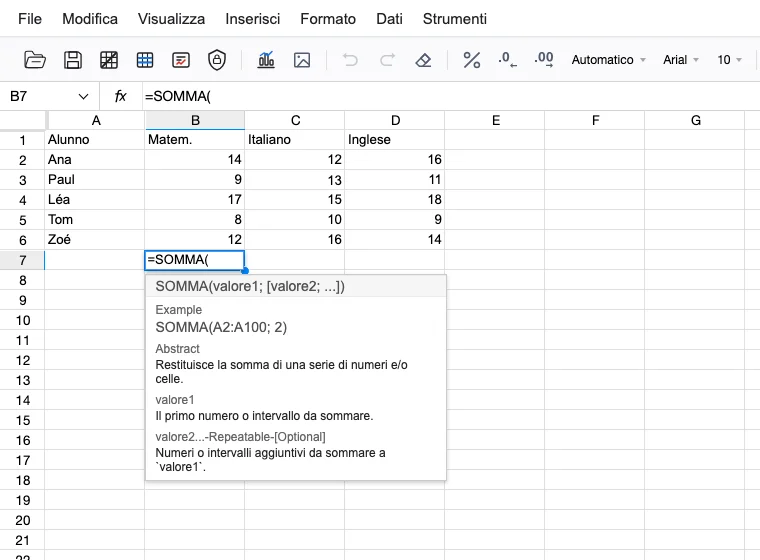
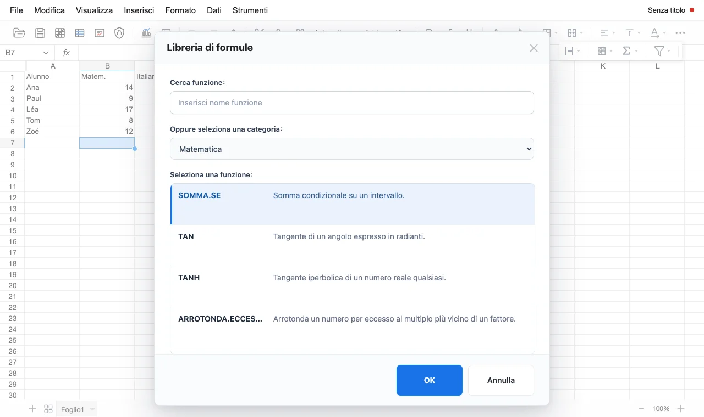

Le formule
Scrivere una formula
Una formula comincia con =. Contiene numeri, testi tra virgolette, riferimenti a celle, operatori e funzioni.
=B2*2
=(B2+C2+D2)/3
=MEDIA(B2:B6)
="Totale: "&SOMMA(B2:B6)La cella mostra il risultato, la barra della formula la formula. Le celle che dipendono da una cella modificata sono ricalcolate subito.
In italiano, la virgola è decimale e il punto e virgola separa gli argomenti: =ARROTONDA(3,14159; 2). I nomi delle funzioni si scrivono in minuscolo o maiuscolo, in italiano o in inglese: =somma(B2:B6) e =SUM(B2:B6) sono accettati.
Indicare le celle con il mouse
Mentre si scrive una formula, un clic su una cella del foglio inserisce il suo indirizzo, un trascinamento inserisce l’intervallo. Ogni riferimento ha il suo colore, nella formula come sul foglio.
Il completamento
Dalle prime lettere di un nome, DocCells propone le funzioni che le contengono: ↑ ↓ per scorrere, Invio, Tab o un clic per scegliere. Dopo la parentesi aperta, un aiuto ricorda gli argomenti.


La somma automatica
scrive una somma. La sua freccia propone Somma, Media, Conteggio, Massimo, Minimo e Tutte le formule: la libreria, dove si cerca una funzione per nome, descrizione o categoria.

Operatori
| Operatore | Funzione |
|---|---|
+ - * / | quattro operazioni |
^ | potenza: =2^10 |
% | percentuale: =20%*B2 |
& | unisce testi: =A2&" "&B2 |
= <> | uguale, diverso |
< > <= >= | confronti |
( ) | priorità |
Le potenze vengono prima di prodotti e quozienti, poi le somme e i confronti. =-2^2 dà −4 (4 in Excel).
Riferimenti
| Scrittura | Indica |
|---|---|
B2 | una cella; segue il riempimento |
$B$2 | la stessa cella, anche riempita |
B$2, $B2 | riga fissa, colonna fissa |
B2:D6 | un intervallo |
B:B, 2:2 | una colonna, una riga intera |
Foglio2!B2, 'Voti 2'!B2 | una cella di un altro foglio |
voti | un intervallo denominato |
Riempita in basso, =B2*$B$1 diventa =B3*$B$1, =B4*$B$1…
Condizioni
=SE(B2>=10; "promosso"; "respinto")
=SE(E(B2>=10; C2>=10); "sì"; "no")
=SWITCH(A2; "a"; 1; "b"; 2; 0)
=CONTA.SE(B2:B6; ">10")
=SOMMA.SE(A2:A6; "Ana"; B2:B6)
=MEDIA.SE(B2:B6; "<10")- I valori logici si scrivono
VERO()eFALSO(), con le parentesi. Si mostrano come TRUE e FALSE. - Un criterio è un testo:
">10","<>0","Ana". I caratteri jolly*e?non sono riconosciuti. - Una cella vuota si riconosce con
=B2=""; non è uguale a 0.
Cercare in una tabella
=CERCA.VERT("Léa"; A2:D6; 3; 0)
=INDICE(A2:A6; CONFRONTA(MAX(B2:B6); B2:B6; 0))La prima cerca Léa nella prima colonna della tabella e restituisce la terza; l’ultimo argomento 0 chiede il valore esatto. La seconda dà il nome di chi ha il voto migliore.
Date e ore
Una data è un numero di giorni, un’ora una frazione di giorno: nelle celle, si sommano e si sottraggono.
=A2+7
=A3-A2
=GIORNI(A3; A2)
=GIORNO.SETTIMANA(A2; 2)Una data data da DATA o OGGI deve passare da una cella per essere sommata: =OGGI()+1 dà #VALUE!, ma se A1 contiene =OGGI(), =A1+1 dà domani. Il risultato è un numero: dargli un formato Data.
Gli errori
| Mostrato | Causa |
|---|---|
#NAME? | nome sconosciuto: errore di battitura, funzione non calcolata, VERO senza parentesi, testo senza virgolette |
#VALUE! | tipo inatteso: un testo dove serve un numero |
DIV/0 | divisione per zero o per una cella vuota |
#N/A | valore non trovato (CONFRONTA, CERCA.VERT), o GEO fuori da DocGeo |
#REF! | cella o foglio che non esiste |
#NUM! | numero fuori dal dominio: =RADQ(-1) |
#ERROR! | formula scritta male, o funzione non calcolata |
SE.ERRORE sostituisce l’errore di una funzione (#N/A, #NUM!): =SE.ERRORE(CERCA.VERT(E1; A2:D6; 2; 0); "assente"). Non sostituisce quello di un calcolo (DIV/0, #VALUE!): contro una divisione per zero, controllare il divisore, =SE(B2; B3/B2; ""), che vale per uno zero come per una cella vuota.